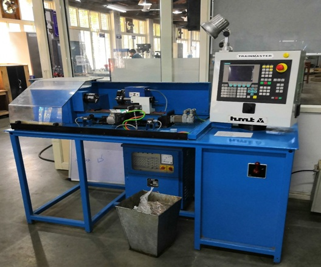

1. CNC Lathe machine
->8-Station bi-directional turret.
->Programmable tailstock.
->Optional C-axis and driven tools .
->Hardened and ground integral guideways.
->Single piece monolithic cast iron bed base structure.
->Direct coupled servomotors.
->Large cross section chip chutes for easy chip flow
2. CNC Milling machine
->Versatile Tool Room Milling Machine with capability for milling,drilling, tapping & boring at any angle.
->The machine is equipped with 3-axes AC servos and variable frequency drive for spindle with 3-axes AC servos and variable frequency drive for spindle with state-of-the art Siemens 802D CNC system. All axes fitted with LM bearings.
->Equipped with 40-3000 rpm 1.5 kW spindle with variable frequency controlled ball bearings for spindle.
->Can ideally be used for tool room applications and in automobile and auto ancillaries, small industry and educational & training centres.
3. CNC Trainmaster Lathe machine

An economical and user friendly PC based system to meet Training requirements of all Training Centres, Technical and Educational Institutions in CNC machine tools operation &programming. Provides a comprehensive range of CNC functions for both Vertical and Horizontal modes of operation, with a CRT monitor and many more advanced features. PC based CNC system.
4. CNC Trainmaster Milling Machine

- Rectangular box construction made of weldment with sufficient ribbing for rigidity
- Cross beam generously ribbed to take up extreme cutting loads.
- AC Spindle motor for main drive.
- LM Guides.
- Compound slide comprising of Y axis and Z axis integral to the milling head is driven by AC servomotors coupled to the ballscrews through timer belt and pulleys.
5. Conventional Lathe Machine

A lathe machine is a machine tool which is used to remove metals from a workpiece to give a desired shape and size. In other words it is a machine that is used to hold the workpiece to perform various metal removing operations such as turning, grooving, chamfering, knurling, facing, forming etc with the help of tools.
6. Universal Milling Machine
A milling machine having a table fitted with all motions and a dividing head with change gears so that it can perform any type of milling operation.
7. Column and knee type milling machine

- 1. Base: It gives support and rigidity to the machine and also acts as a reservoir for the cutting fluids.
- 2. Column: The column is the main supporting frame mounted vertically on the base. The column is box shaped, heavily ribbed inside and houses all the driving mechanisms for the spindle and table feed.
- 3. Knee: The knee is a rigid casting mounted on the front face of the column. The knee moves vertically along the guide ways and this movement enables to adjust the distance between the cutter and the job mounted on the table. The adjustment is obtained manually or automatically by operating the elevating screw provided below the knee.
- 4. Saddle: The saddle rests on the knee and constitutes the intermediate part between the knee and the table. The saddle moves transversely, i.e., crosswise (in or out) on guide ways provided on the knee.
8. Surface grinding machine

Surface grinding machine is used to produce a smooth finish on flat surfaces. It is a widely used abrasive machining process in which a spinning wheel covered in rough particles cuts chips of metallic or nonmetallic substance from a workpiece, making a face of it flat or smooth.
9. Power Hacksaw
A hacksaw is a fine-toothed saw, originally and mainly made for cutting metal. The equivalent saw
for cutting wood is usually called bow saw.
Most hacksaws are hand saws with a C-shaped frame that holds a blade under tension. Such hacksaws
have a handle, usually a pistol grip, with pins for attaching a narrow disposable blade. The
frames may also be adjustable to accommodate blades of different sizes. A screw or other mechanism
is used to put the thin blade under tension.
10. Plasma arc cutting machine
Plasma cutting is a process that cuts through electrically conductive materials by means of an accelerated jet of hot plasma. Typical materials cut with a plasma torchinclude steel, Stainless steel, aluminum, brass and copper, although other conductive metals may be cut as well. Plasma cutting is often used in fabrication shops,automotive repair and restoration, industrial construction, and salvage and scrapping operations. Due to the high speed and precision cuts combined with low cost, plasma cutting sees widespread use from large-scale industrial CNC applications down to small hobbyist shops.
11. Arc welding machine
12. Spot welding machine
Spot welding is a process in which contacting metal surface points are joined by the heat obtained from resistance to electric current. It is a subset of electric resistance welding. Work-pieces are held together under pressure exerted by electrodes.
13. MIG Welding Machine
MIG welding (GMAW – Gas Metal Arc Welding) is the most common process used in home shops, small businesses, manufacturing and metal fabrication applications. Choose from single-phase Millermatic® all-in-one MIG welding machines or more powerful three-phase MIG welding systems that suit an endless variety of applications, including stainless steel and aluminum welding.
14. MIG Welding Stimulator
The guide WELD welding simulator is a virtual reality welding simulator that enables students to rapidly refine basic welding skills, learn proper welding technique and explore welding career paths in a safe, virtual environment, without the need for consumables like metal and gas.